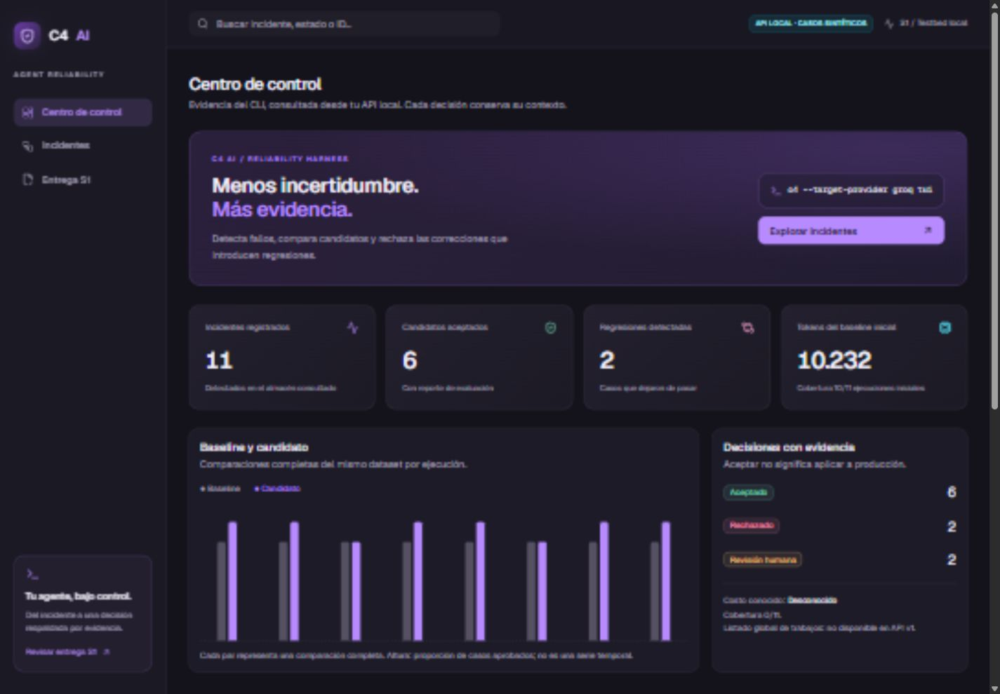

C4 AI / PRODUCT PREVIEW
La misma evidencia, en cada pantalla
Prototipo de las vistas web implementadas, con capturas de evidencia sintética real del sistema. Los controles cambian de dispositivo. Es una vista previa de capturas; para interactuar con datos abre el dashboard local.

Escritorio · 1440 × 1000 · API local
Web responsive; todavía no es una aplicación nativa ni un instalador Tauri. Sin accesos de máquina desde esta vista. Reporte técnico · Dashboard local (requiere servidor)